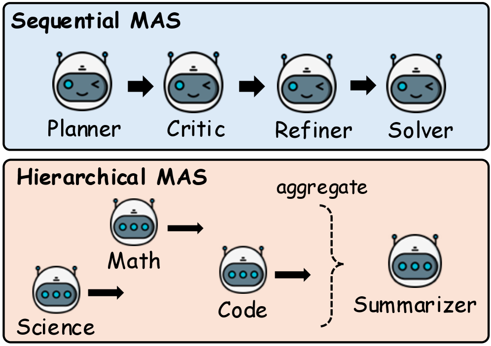
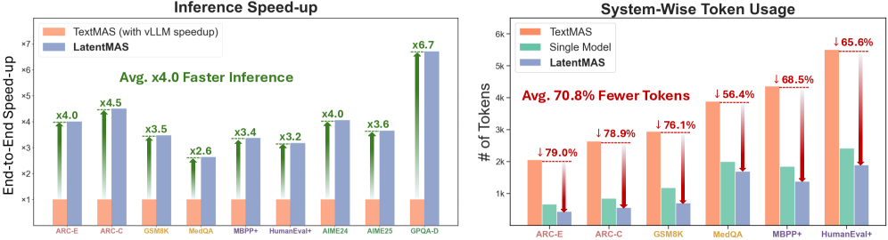
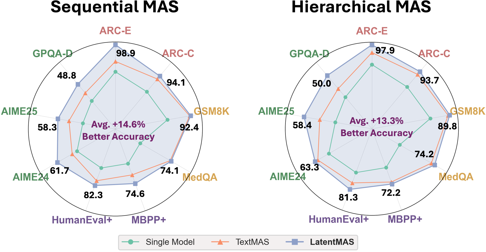

Overview — the logical flow개요 — 전체 논리 흐름
Figures from the paper논문 원본 그림




Comprehensive walkthrough전체 내용 정리
Problem & Motivation문제 및 동기
LLM-based multi-agent systems extend single-model reasoning into system-level intelligence, but they rely on natural-language text as the lingua franca for both each agent's internal reasoning (CoT) and cross-agent communication. This text mediation incurs heavy token usage and inference latency, and forces lossy re-encoding of internal representations into discrete tokens. Prior work explored latent space only partially — either single-model internal latent CoT, or KV/embedding exchange between just two models — but no framework unified latent reasoning and latent communication end-to-end. LatentMAS asks: Can MAS achieve pure latent collaboration?, grounded on three principles: reasoning expressiveness, communication fidelity, and collaboration complexity.
LLM 기반 멀티에이전트 시스템은 단일 모델 추론을 시스템 수준 지능으로 확장하지만, 각 에이전트의 내부 추론(CoT)과 에이전트 간 통신 모두에 자연어 텍스트를 공용어로 의존한다. 이 텍스트 매개는 막대한 토큰 사용과 추론 지연을 유발하고, 내부 표현을 이산 토큰으로 손실 있게 재인코딩하도록 강제한다. 선행 연구는 단일 모델 내부 잠재 CoT 또는 두 모델 간 KV/임베딩 교환처럼 잠재 공간을 부분적으로만 다뤘으며, 잠재 추론과 잠재 통신을 종단간 통합한 프레임워크는 없었다. LatentMAS는 MAS가 순수 잠재 협업을 이룰 수 있는가?를 묻고, 추론 표현력·통신 충실도·협업 복잡도 세 원칙에 기반한다.
Mechanism 1 — Auto-regressive Latent Thoughts & Wa메커니즘 1 — 자기회귀 잠재 사고와 Wa
Instead of decoding tokens, each agent passes input embeddings E through its L transformer layers, takes the last-layer hidden state ht, and inserts it directly as the next-step input embedding, repeating for m latent steps to produce latent thoughts H = [ht+1,…,ht+m]. Because raw last-layer states are out-of-distribution for shallow input layers, a training-free linear alignment operator Wa ∈ ℝdh×dh maps each output back to valid input space via e = hWa, where Wa ≈ Wout†Win, derived to minimize the Wasserstein distance to the token-embedding distribution. Wa is computed once per run and reused, so its cost is negligible.
토큰을 디코딩하는 대신, 각 에이전트는 입력 임베딩 E를 L개 트랜스포머 층에 통과시켜 마지막 층 은닉 상태 ht를 얻고 이를 다음 단계 입력 임베딩으로 직접 삽입하며, 이를 m단계 반복해 잠재 사고 H = [ht+1,…,ht+m]를 생성한다. 가공되지 않은 마지막 층 상태는 얕은 입력 층에서 분포 밖(OOD)이므로, 학습 불필요 선형 정렬 연산자 Wa ∈ ℝdh×dh가 e = hWa로 출력을 유효 입력 공간에 되돌린다(Wa ≈ Wout†Win, 토큰 임베딩 분포와의 바서슈타인 거리 최소화). Wa는 실행당 한 번 계산해 재사용하므로 비용이 무시할 만하다.
Mechanism 2 — Latent Working Memory Transfer메커니즘 2 — 잠재 작업 메모리 전이
After an agent A1 finishes its m latent steps, LatentMAS extracts the KV-caches from all L transformer layers once, forming a latent working memory MA1 = {(K(l), V(l))} that encapsulates both the original input context and the newly generated latent thoughts. The next agent A2 integrates this by layer-wise concatenation — prepending each K(l)/V(l) of A1 to its own caches — so A2's subsequent latent generation is conditioned on A1's full internal state. Transferring KV (rather than raw hidden states) avoids redundant recomputation, and the process chains across all agents; only the final agent decodes a text answer.
에이전트 A1이 m번의 잠재 단계를 마치면 LatentMAS는 전체 L개 트랜스포머 층의 KV 캐시를 한 번에 추출해, 원래 입력 맥락과 새로 생성된 잠재 사고를 모두 담은 잠재 작업 메모리 MA1 = {(K(l), V(l))}를 만든다. 다음 에이전트 A2는 A1의 각 K(l)/V(l)를 자기 캐시 앞에 덧붙이는 층별 연결로 이를 통합해, 이후 잠재 생성을 A1의 전체 내부 상태에 조건화한다. 원시 은닉 상태가 아닌 KV를 전이해 중복 재계산을 피하며, 이 과정은 모든 에이전트로 연쇄되고 마지막 에이전트만 텍스트 답을 디코딩한다.
Theory — Expressiveness, Lossless Transfer, Complexity이론 — 표현력·무손실 전이·복잡도
Thm 3.1 (Expressiveness): under the Linear Representation Hypothesis, losslessly expressing m latent thoughts in text requires at least Ω(dhm/log|V|) tokens, so latent generation is O(dh/log|V|) times more efficient and expressiveness scales linearly with hidden dim dh — e.g. Qwen3-4B/8B/14B are 235.7/377.1/471.4× more efficient than text. Thm 3.3 (Lossless transfer): an agent receiving latent working memory yields outputs equivalent to directly inputting predecessors' outputs. Thm 3.4 (Complexity): per-agent time is O((dh2m + dhm2 + dhtm)L), far below the text-MAS cost needed for equal expressiveness.
정리 3.1(표현력): 선형 표현 가설 하에서 m개의 잠재 사고를 텍스트로 무손실 표현하려면 최소 Ω(dhm/log|V|) 토큰이 필요하므로, 잠재 생성은 O(dh/log|V|)배 더 효율적이고 표현력은 은닉 차원 dh에 선형 비례한다 — 예: Qwen3-4B/8B/14B는 텍스트 대비 235.7/377.1/471.4배 효율적이다. 정리 3.3(무손실 전이): 잠재 작업 메모리를 받은 에이전트의 출력은 선행 에이전트 출력을 직접 입력한 경우와 동등하다. 정리 3.4(복잡도): 에이전트당 시간은 O((dh2m + dhm2 + dhtm)L)로, 동일 표현력을 위한 텍스트-MAS 비용보다 훨씬 낮다.
Experimental Setup실험 설정
Evaluation spans 9 benchmarks: math/science — GSM8K, AIME24/25, GPQA-Diamond, MedQA; commonsense — ARC-Easy/Challenge; code — MBPP-Plus, HumanEval-Plus. Backbones are 5 off-the-shelf LLMs (Qwen3-4B/8B/14B, Llama-3.2-3B, Llama-3.1-8B). Two MAS settings: sequential (Planner→Critic→Refiner→Solver) and hierarchical (Math/Science/Code experts aggregated by a Summarizer). Baselines: Single LLM, Sequential TextMAS, Hierarchical TextMAS. Each agent runs m ∈ {0,10,20,40,80} latent steps; temperature 0.6, top-p 0.95; 8×A100-80G, averaged over three runs.
평가는 9개 벤치마크(수학/과학 — GSM8K, AIME24/25, GPQA-Diamond, MedQA; 상식 — ARC-Easy/Challenge; 코드 — MBPP-Plus, HumanEval-Plus)를 포괄한다. 백본은 5개 기성 LLM(Qwen3-4B/8B/14B, Llama-3.2-3B, Llama-3.1-8B). 두 MAS 설정: 순차형(Planner→Critic→Refiner→Solver)과 계층형(수학/과학/코드 전문가를 Summarizer가 집계). 기준선: 단일 LLM, 순차 TextMAS, 계층 TextMAS. 각 에이전트는 m ∈ {0,10,20,40,80} 잠재 단계, 온도 0.6·top-p 0.95, 8×A100-80G, 3회 평균.
Main Results & Ablations주요 결과 및 제거 실험
LatentMAS beats the single-model baseline by +14.6% (sequential) / +13.3% (hierarchical) on average and TextMAS by +2.8% / +4.6%, while cutting output tokens 70.8%–83.7% and running 4×–4.3× faster (2.6×–7× vs vLLM). Hybrid ablations on Qwen3-8B show both latent components matter: Latent-reason+Text-comm = 85.5/66.4/65.9 and Text-reason+Latent-comm = 90.1/68.0/71.2 (GSM8K/MBPP+/MedQA), both below full LatentMAS at 93.8/74.6/75.3.
LatentMAS는 단일 모델 대비 평균 +14.6%(순차)·+13.3%(계층), TextMAS 대비 +2.8%·+4.6% 향상하며, 출력 토큰을 70.8%~83.7% 절감하고 4×~4.3× 빠르다(vLLM 대비 2.6×~7×). Qwen3-8B 하이브리드 제거 실험은 두 잠재 요소가 모두 중요함을 보인다: 잠재추론+텍스트통신 = 85.5/66.4/65.9, 텍스트추론+잠재통신 = 90.1/68.0/71.2 (GSM8K/MBPP+/MedQA), 둘 다 전체 LatentMAS의 93.8/74.6/75.3보다 낮다.
In-depth Analyses심층 분석
On 300 MedQA questions (40 latent steps), LatentMAS's latent embeddings occupy nearly the same region as TextMAS token embeddings while covering their distribution with lower average pairwise cosine similarity (semantically consistent yet more diverse). Applying Wa adds +2.3% to +5.3% accuracy; accuracy peaks around 40–80 latent steps. A "debug mode" emits a parallel readable probe that, on 100 Qwen3-14B GSM8K pairs, is 96.2% correct when the final answer is correct and 90.0% incorrect when it is wrong. Trends hold across Qwen3 and Llama3.
300개 MedQA 문항(잠재 40단계)에서 LatentMAS의 잠재 임베딩은 TextMAS 토큰 임베딩과 거의 같은 영역을 차지하면서 그 분포를 더 낮은 평균 쌍별 코사인 유사도로 포괄한다(의미 일관·더 다양). Wa 적용 시 정확도 +2.3%~+5.3% 향상, 정확도는 40~80 잠재 단계 부근에서 정점. "디버그 모드"의 병렬 가독 프로브는 Qwen3-14B GSM8K 100쌍에서 최종 정답일 때 96.2% 정확, 오답일 때 90.0% 부정확. 경향은 Qwen3·Llama3 모두에서 유지.
Key results — Qwen3-14B, Sequential MAS핵심 결과 — Qwen3-14B, 순차형 MAS
| Benchmark | Single | TextMAS | LatentMAS |
|---|---|---|---|
| ARC-E | 97.2 | 99.0 | 99.4 |
| ARC-C | 92.6 | 95.9 | 95.6 |
| GSM8K | 83.7 | 93.8 | 95.2 |
| MedQA | 64.7 | 80.3 | 80.7 |
| MBPP+ | 68.5 | 72.8 | 75.7 |
| HumanEval+ | 76.8 | 81.1 | 86.5 |
| AIME24 | 63.3 | 63.3 | 66.7 |
| AIME25 | 56.7 | 60.0 | 63.3 |
| GPQA-Diamond | 48.5 | 51.5 | 52.0 |
✅ Strengths✅ 강점
Genuinely unified, training-free framing진정으로 통합된 학습 불필요 프레이밍
First to combine intra-agent latent reasoning with inter-agent latent KV communication into one end-to-end, training-free MAS pipeline — and it cleanly positions itself against prior work that did only one of the two.
에이전트 내부 잠재 추론과 에이전트 간 잠재 KV 통신을 하나의 종단간·학습 불필요 MAS 파이프라인으로 결합한 첫 시도이며, 둘 중 하나만 한 선행 연구와 명확히 대비된다.
Large, consistent, well-decomposed efficiency gains크고 일관되며 잘 분해된 효율 향상
−70.8% to −83.7% output tokens and 4×–4.3× speed (2.6×–7× even vs vLLM-optimized TextMAS), across all 9 benchmarks and both settings. Crucially they measure the final agent alone (−29.1% tokens), showing savings aren't merely from deleting intermediate text.
9개 벤치마크·두 설정 전반에서 출력 토큰 −70.8%~−83.7%, 속도 4×~4.3×(vLLM 최적화 TextMAS 대비도 2.6×~7×). 특히 최종 에이전트만 따로 측정(−29.1% 토큰)해, 절감이 단순히 중간 텍스트 삭제 때문이 아님을 보였다.
Principled, validated Wa alignment원리적이고 검증된 Wa 정렬
A closed-form ridge-regression projection that provably minimizes an upper bound on the Wasserstein distance to the input-embedding distribution, computed once and reused, contributing a measured +2.3–5.3% accuracy (ablation-supported).
입력 임베딩 분포와의 바서슈타인 거리 상계를 증명 가능하게 최소화하는 닫힌 형식의 능형 회귀 사영으로, 한 번 계산해 재사용하며 +2.3~5.3% 정확도 기여(제거 실험으로 뒷받침).
Clean two-way ablation깔끔한 양방향 제거 실험
Both hybrids (latent-reason+text-comm, text-reason+latent-comm) underperform full LatentMAS, credibly showing the two contributions are complementary rather than one carrying all the gain. The right experiment, done correctly.
두 하이브리드(잠재추론+텍스트통신, 텍스트추론+잠재통신)가 모두 전체 LatentMAS보다 낮아, 두 기여가 보완적이며 한쪽이 모든 이득을 떠받치지 않음을 신뢰성 있게 보였다. 올바른 실험을 올바르게 수행.
Broad evaluation + interpretability tooling폭넓은 평가 + 해석 도구
9 benchmarks, 2 topologies, 2 model families, with trends transferring to Llama. The "debug mode" and embedding-coverage analysis are commendable attempts to make a latent system inspectable rather than a pure black box.
9개 벤치마크·2개 구조·2개 모델 계열, Llama로도 경향 전이. "디버그 모드"와 임베딩 커버리지 분석은 잠재 시스템을 순수 블랙박스가 아닌 검사 가능한 것으로 만들려는 칭찬할 시도다.
⚔️ Weaknesses, gaps & suspicious points⚔️ 약점·부족한 점·의심 포인트
The headline "14.6%" is vs the wrong baseline; gains over TextMAS are marginal헤드라인 "14.6%"는 잘못된 기준선 대비; TextMAS 대비 이득은 미미
"Up to 14.6% higher accuracy" is the gain over the single-model baseline (a near-strawman — any 4-agent system beats one agent), not over TextMAS, the real competitor. Versus TextMAS the average is only +2.8% / +4.6%, and per-cell it is routinely ≤0.5pp; yet the 14.6% figure is foregrounded throughout.
"최대 14.6% 정확도 향상"은 실제 경쟁자 TextMAS가 아니라 단일 모델 대비 이득(4-에이전트가 1-에이전트를 이기는 건 거의 허수아비)이다. TextMAS 대비 평균은 +2.8%/+4.6%뿐이고 셀 단위로는 흔히 ≤0.5pp인데도, 14.6% 수치를 시종일관 전면에 내세운다.
Gains are not "consistent" — many ties and outright losses to TextMAS이득은 "일관적"이지 않음 — TextMAS에 비기거나 지는 셀 다수
Despite "consistently outperforms," tables show losses: GSM8K Seq Qwen3-4B ↓1.6, ARC-C ↓0.2/↓0.3, GSM8K Hier ↓1.0/↓0.9, and several exact ↑0.0 ties on AIME. On easy benchmarks (ARC-E/C, GSM8K, where TextMAS already scores 90–99%) LatentMAS is statistically indistinguishable. The honest summary is "comparable accuracy at much lower cost," not "higher accuracy."
"일관되게 능가" 주장과 달리 표엔 패배가 있다: GSM8K Seq Qwen3-4B ↓1.6, ARC-C ↓0.2/↓0.3, GSM8K Hier ↓1.0/↓0.9, AIME엔 정확히 ↑0.0 동률 다수. 쉬운 벤치마크(ARC-E/C, GSM8K; TextMAS가 이미 90~99%)에선 통계적으로 구별 불가. 정직한 요약은 "정확도 향상"이 아니라 "훨씬 낮은 비용으로 동등한 정확도"다.
No seeds, no variance, no significance — fatal given AIME n=30 & T=0.6 sampling시드·분산·유의성 없음 — AIME n=30 · T=0.6 샘플링에 치명적
Results are "the mean over three runs" with stochastic decoding (T=0.6, top-p 0.95), yet no standard deviations, CIs, or significance tests appear anywhere. AIME24/25 have only 30 problems (1 item ≈ 3.3pp), so most AIME "gains" of 3.3–3.4pp are a single question flipping — well within run-to-run noise. The central claim (latent > text) is effectively unfalsifiable from the data shown.
결과는 확률적 디코딩(T=0.6, top-p 0.95)의 "3회 평균"이라면서 표준편차·신뢰구간·유의성 검정이 어디에도 없다. AIME24/25는 30문제뿐(1문항 ≈ 3.3pp)이라 대부분의 3.3~3.4pp "이득"은 한 문제가 뒤집힌 것으로 실행 간 노이즈 범위다. 핵심 주장(잠재 > 텍스트)은 제시된 데이터로 사실상 반증 불가.
"Lossless / richer than text" is overclaimed"무손실 / 텍스트보다 풍부"는 과대주장
Thm 3.3 ("lossless") only proves reading K/V from a cache equals recomputing it from the same tokens through the same model — a near-tautology — and says nothing about whether the downstream agent uses it better than text. Thm 3.1 is a worst-case counting upper bound (under a strong ternary linear-representation assumption), i.e. latent states could encode that much, not that the model populates it usefully. Crucially, the actual pipeline feeds back the approximate Wa projection, so even the "lossless" guarantee doesn't cover the system as implemented.
정리 3.3("무손실")은 캐시에서 K/V 읽기가 같은 모델로 같은 토큰을 재계산하는 것과 같음만 증명(거의 동어반복)할 뿐, 하류 에이전트가 텍스트보다 더 잘 쓰는지는 말하지 않는다. 정리 3.1은 강한 삼진 선형표현 가정 하의 최악 계수 상한으로, 잠재 상태가 그만큼 인코딩할 수 있다는 것이지 유용하게 채운다는 게 아니다. 게다가 실제 파이프라인은 근사 Wa 사영을 되먹이므로, "무손실" 보장조차 구현된 시스템을 포괄하지 못한다.
Homogeneous same-model agents only; heterogeneity needs a trainable adapter (contradicting "training-free")동질적 동일 모델만; 이질성은 학습형 어댑터 필요(=training-free와 모순)
Layer-wise KV concatenation is only well-defined when every agent shares L, dh, head geometry and tokenizer — i.e. the same model; Appendix G admits this and experiments never mix families. Supporting truly heterogeneous agents "requires a trainable adapter," directly contradicting the central training-free pitch. So "generalizes across families" means "within Qwen3 OR within Llama3 separately," not cross-family collaboration — a real limit for practical specialist-mixing MAS.
층별 KV 연결은 모든 에이전트가 L·dh·헤드 기하·토크나이저를 공유할 때만 정의된다 — 즉 같은 모델; 부록 G도 이를 인정하고 실험은 계열을 섞지 않는다. 진짜 이질 에이전트 지원은 "학습형 어댑터"를 요구해 핵심 training-free와 정면 모순. 따라서 "계열 간 일반화"는 "Qwen3 안에서 또는 Llama3 안에서 따로"일 뿐 계열 간 협업이 아니며, 전문가 모델 혼합 실용 MAS엔 실질적 한계다.
Efficiency isn't compute-matched; speedups are highly non-uniform효율 비교가 계산량 매칭 아님; 속도 향상이 매우 비균일
The 4× / −80% headlines pit <50 latent steps against a TextMAS baseline allowed up to 20K output tokens — so the win is partly definitional; no accuracy-vs-compute Pareto frontier is shown. And the "4×" is an average over ×1.9 (GSM8K) to ×6.8; token reduction ranges 46.5%–87.9%. The biggest wins cluster on the most verbose-baseline tasks (AIME's 20K cap, GPQA).
4× / −80% 헤드라인은 <50 잠재 스텝을 최대 20K 출력 토큰이 허용된 TextMAS와 비교 — 우위가 부분적으로 정의에 의한 것이며, 정확도-계산량 파레토가 없다. "4×"도 ×1.9(GSM8K)~×6.8의 평균이고 토큰 절감은 46.5%~87.9%. 가장 큰 이득은 가장 장황한 기준선 과제(AIME 20K 상한, GPQA)에 몰린다.
Missing baselines & a compute-matched single-agent control누락된 기준선 + 계산량 정합 단일 에이전트 통제
All baselines are text methods. There is no comparison to the prior latent work the paper builds on (single-model latent-CoT à la Coconut; cross-model KV/embedding sharing), and no compute-matched single-model control (same FLOPs / self-consistency / more reasoning tokens). So "latent collaboration helps" is not separated from "more test-time compute helps," and the modest +2.8%/+4.6% might be matched by trivially scaling single-agent compute.
모든 기준선이 텍스트 기법이다. 토대로 삼은 선행 잠재 연구(Coconut류 단일 모델 잠재 CoT; 모델 간 KV/임베딩 공유)와의 비교도, 계산량 정합 단일 모델 통제(동일 FLOPs/자기일관성/추론 토큰 증가)도 없다. 따라서 "잠재 협업이 돕는다"가 "테스트시 연산 증가가 돕는다"와 분리되지 않으며, 완만한 +2.8%/+4.6%는 단일 에이전트 연산을 늘리는 것만으로 따라잡힐 수 있다.
KV-cache memory overhead is carried across all agents but never measuredKV 캐시 메모리 오버헤드가 모든 에이전트에 누적되지만 미측정
Each successor prepends every predecessor's full layer-wise KV cache; the hierarchical summarizer integrates all experts' caches — a monotonically growing memory footprint. Yet Thm 3.4 analyzes only time, and no peak-memory numbers are reported. For a method whose whole pitch is efficiency, trading compute for unquantified memory (KV caches dominate inference memory at scale) is a material gap.
각 후속 에이전트가 선행자의 전체 층별 KV 캐시를 prepend하고, 계층 요약자는 모든 전문가 캐시를 통합 — 단조 증가 메모리. 그런데 정리 3.4는 시간만 분석하고 최대 메모리 수치가 전혀 없다. 효율이 전체 셀링 포인트인 방법이 계산을 정량화되지 않은 메모리와 맞바꾸는 것(대규모에서 KV 캐시가 추론 메모리를 지배)은 실질적 공백이다.
Removing text destroys monitorability; the "debug mode" mitigation is partial & possibly unfaithful텍스트 제거는 감시가능성 파괴; "디버그 모드" 완화책은 부분적·불충실 가능
Inter-agent text is a primary safety/interpretability surface; latent communication makes collusion or error propagation invisible by construction, yet the Impact Statement disclaims any concern. The mitigation generates a parallel text — not a faithful decode of the latent thoughts actually transferred — validated by a single thin study (Qwen3-14B, GSM8K only, n=100, manual annotation, no inter-annotator agreement). 96.2%/90.0% is suggestive at best.
에이전트 간 텍스트는 핵심 안전/해석 표면이다. 잠재 통신은 담합·오류 전파를 구조적으로 비가시화하는데도 Impact Statement는 우려를 부인한다. 완화책은 병렬 텍스트를 생성할 뿐 실제 전달된 잠재 사고의 충실한 디코딩이 아니며, 단일 빈약한 연구(Qwen3-14B·GSM8K만·n=100·수동 주석·주석자 간 일치도 없음)로만 검증된다. 96.2%/90.0%는 잘해야 시사적이다.